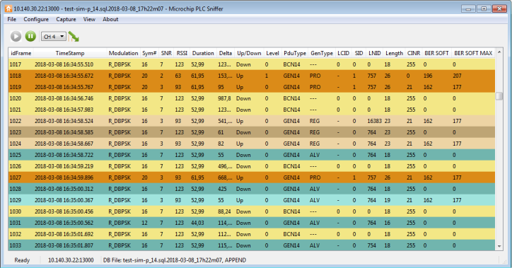

On a PRIME network, the main window will look like this:
Figure 1. Capture Window (PRIME)

The capture window has a tool bar with four commands:
Figure 2. Capture Window Tool Bar (PRIME)
Pause command will stop the update of the scroll view, while the logging
process will continue. No frames will be lost. To restart showing the live stream of PDUs,
click the play button.
Channel combo box allows selecting the PRIME channel to listen. A
compatible device must be used; otherwise this option has no effect.
The last command button will set the CRC configuration on the hardware
device. If enabled, the hardware device will calculate the CRC on all the frames, and
discard frame errors. If disabled, all frames received will be sent to the PC software. The
status of this setting is shown in the CRC column.
The main window displays a table with the current log. It is updated in
real time as frames are received from the hardware sniffer. The data shown is:
- idFrame: index of the
frame
- Timestamp: timestamp of the
frame. If it is not provided by the hardware/remote sniffer device, but added by the
PC software. The timestamp is stored as a 64-bit integer, with resolution of
milliseconds
- Modulation: modulation scheme
used to transmit this frame
- Symbols: number of OFDM
symbols used to transmit this frame
- SNR: signal-to-noise ratio as
defined by PRIME standard, and returned by the “PHY_SNR.confirm
primitive”
- ExSNR: extended SNR. SNR
measured in dB
- RSSI: Received Signal Strength
Indication, measured by the hardware sniffer in dBµV
- Channel: PRIME channel in
which the sniffer is listening
- TimeIni: start of reception of
this frame in reference to the first frame received. Units: milliseconds
- TimeEnd: end of frames. Unit:
milliseconds
- Duration: length of this frame
in milliseconds
- Delta: time between the
beginning of this frame and the beginning of the previous frame
- CRC: shows if the CRC check is
enabled on the hardware sniffer or performed by the software. If CRC is enabled on
the hardware device, CRC value for the frame is not available
- UP_Down: Direction of the
frame. Down means that a frame has its origin on the Base Node. Up frames originate
in terminal nodes
- NAD: No aggregation at
destination
- Level: indicates in which
level on the topology the frame has been originated. A sniffer can listen frames from
different levels in the hierarchy depending on the medium conditions
- PduType: defined by PRIME
standard. PNPDU, BEACON, GENERIC
- GenType: defined by PRIME
standard. Generic frames can be Control or Data PDUs
- LCID: Local Connection
Identifier. Defined by PRIME Standard
- SID: Switch Identifier
- LNID: Local Node
Identifier
- Length: Length of the PDU in
bytes
- PrimeType: Frame type as
defined by PRIME standard. It can be: Type A (PRIME 1.3 frames), Type B
(Robust modes defined in PRIME 1.4 standard) or Type BC (Backwards Compatible
frame, defined in PRIME 1.4 standard)
- RM: Robust mode, this field
only makes sense in PRIME 1.4 networks. It specifies the weakest modulation a device
can decode from a receiving peer
- TicksIni/TicksEnd: sniffer
internal clock counter. This counter measures the time as seen by the source device.
A 32-bit, 10 tenths of microsecond clock resolution. These values are used to compute
the Duration and Delta values
While the PLC traffic is logged into a database, the software tries to
infer the PLC network structure and status as seen by the Base Node. This information is
shown in several docking views:
- Hexa View
- Packet View
- Network View
- Nodes/Switches Plot
- Filter View